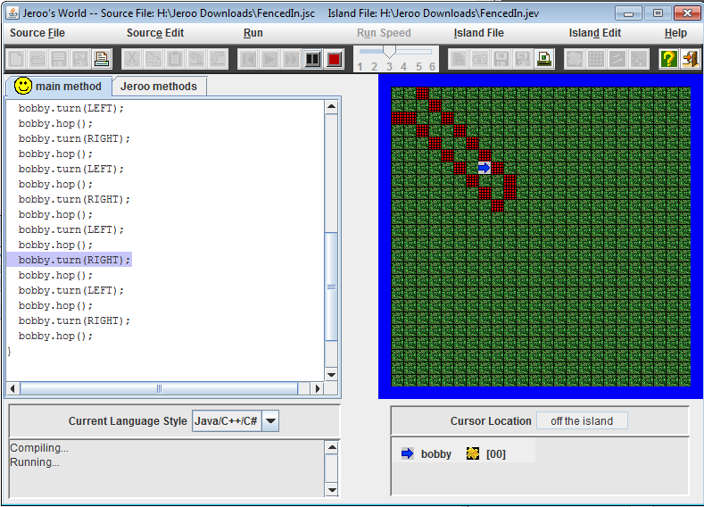
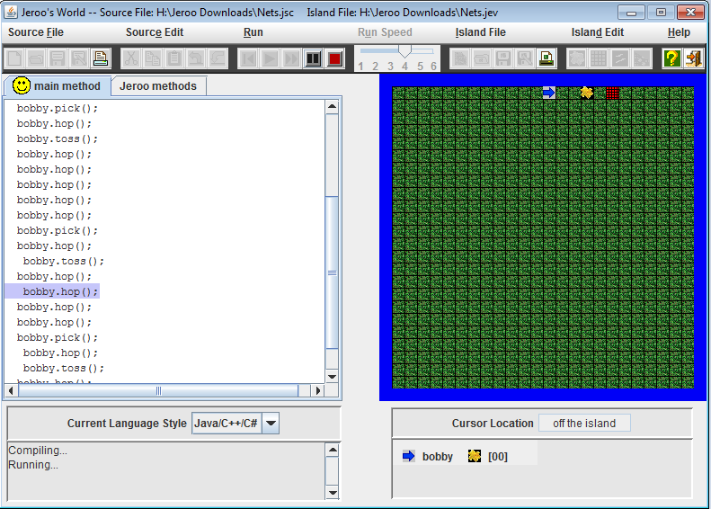
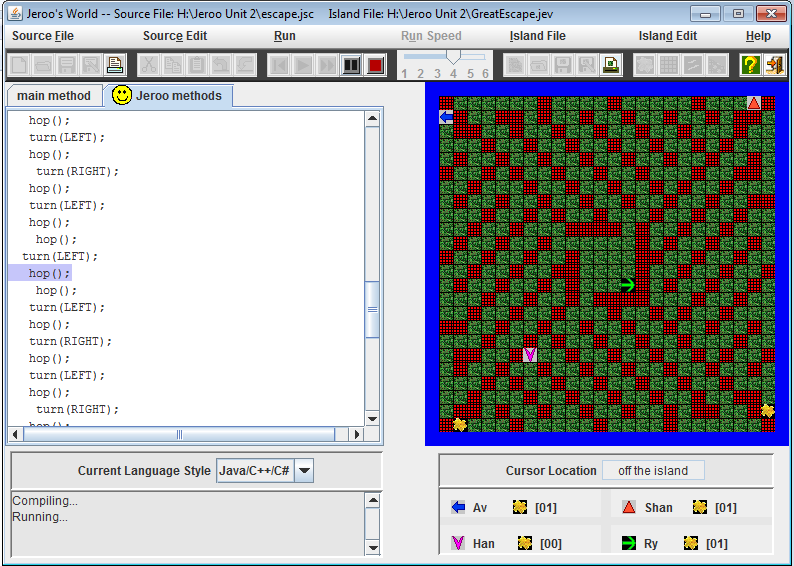
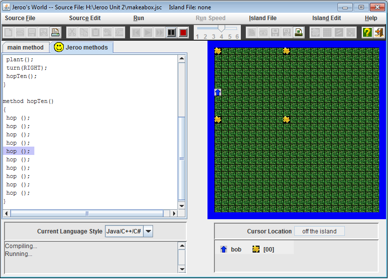
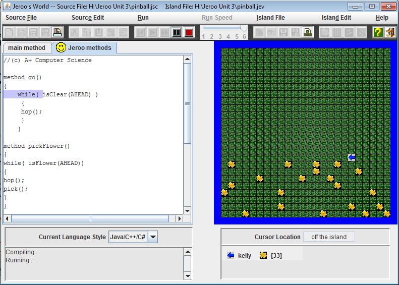
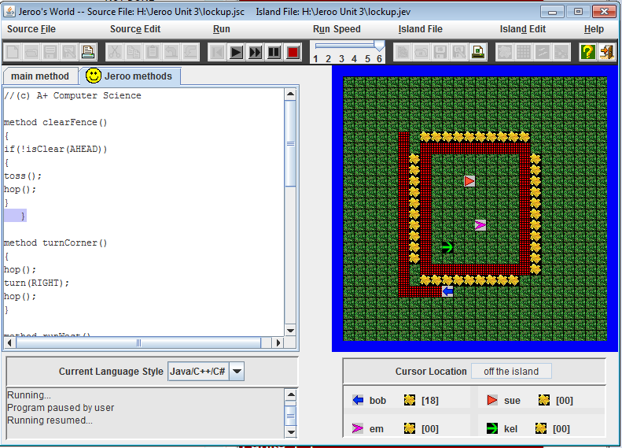
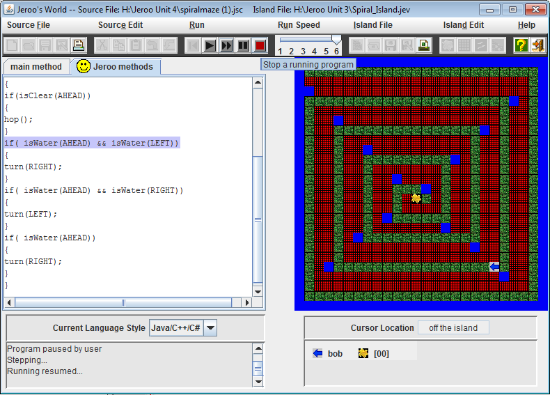
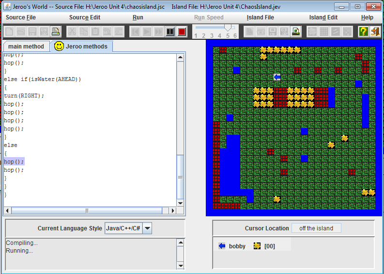

Jeroo Content
Unit 1 Jeroo
In Unit 1 I got a introduction to Jeroo. I learned about the objects in Jeroo, the Jeroo environment, and also started to learn how to analyze a problem, and determine the steps I would take to solve it. Below are two screenshots from my two of my Unit 1 labs, Fenced-In and Nets.
 Unit 1 Labs
- Fenced-In
- Nets
- Diamonds
Unit 2 Jeroo
In Unit 2 I learned more about method calls to solve problems. I learned to use single Jeroo methods multiple times in solving problems that involve the same action being repeated. Below are two screenshots from my Unit 2 labs, Escape and Make a Box.
 Unit 2 Labs
Unit 3 Jeroo
In Unit 3 I learned how to use loops to create more efficient Jeroo methods. I also learned how to analyze a problem and determine how to break it into smaller tasks and create the needed methods to solve it.I got more comfortable with using loops to create more effiecient Jeroo methods, as they eliminated repetitive codes that before would took up a lot of time and space to write. Below are two screenshots from my Unit 3 labs, Pinball and Lockup
 Unit 3 Labs
Unit 4 Jeroo
In Unit 4 I learned how to use loops, ifs, and methods to solve problems. I learned to analyze a problem andd involve branching and decision making in my solution. Adding on, I learned more about how I could combine if statemements and loops in my solutions to labs to create the most efficient solution possible. Below are two screenshots from my Unit 4 Labs Spiral Maze and Chaos Island.
 Unit 4 Labs
Put Jeroo Content Here